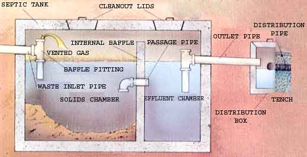
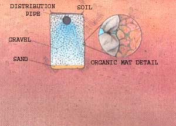
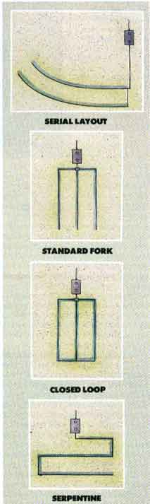

The success of the system should be no mystery.
The septic tank is an essential part of the system. The two-chamber design shown here is popular because it’s uncomplicated and reasonably effective-but flooding or overloading the tank can still send undigested material into the drain lines, clogging the absorption field. To eliminate that problem, the latest tank designs take advantage of deep holding chambers and internal convolutions to encourage solids to settle out from the flow.
ALMOST 60 MILLION PEOPLE IN America practice inexpensive and effective home-scale recycling every time they run water. Individual, on-site sewage disposal systems-"the septic" to some country folks-do a commendable job of treating domestic waste through a natural biological process that eventually returns most spent water safely to its source. However, septic systems aren't perfect. Because of them, we tend to use too much water-perhaps 40% too much. Moreover, as long as the liquid is flowing in the right direction-out-we assume the plan is working, when in fact it may be broadcasting bacteria and discarded household chemicals.
The boast of a homeowner who claims 20 years of trouble-free septic service is, sad to say, a shallow one. A properly designed septic system is supposed to receive occasional maintenance-usually nothing more than a cleaning every few years to remove accumulated insolubles. An untended unit can easily be overtaxed without a sign, quietly suffocating itself until it reaches a point at which it becomes less expensive to replace the system than to try to save it.
Then again, some systems are improperly designed or installed and cause their owners to face upkeep and expense beyond the norm. Frequent pumping, costly chemical treatments and mechanical handling systems shouldn't be necessary with a good installation.
Abuse of a system, however, will quickly lead to problems. No matter how conveniently paint thinners, cigarettes, hair and harsh household cleaners go down the drain, they have no place there. Foreign-and especially nonorganic-material may never break down and can contaminate both the system and the local water supply.
Think of the septic system as a continuation of your household drain plumbing. Every water-bearing fixture in your home is connected by drainpipe to one main line that carries the highly diluted waste material to an air-and watertight septic tank buried a foot or so beneath the soil and at least 10 feet from the house.
The tank can be constructed of precast concrete, fiberglass, steel and even stone or sealed brick. Average capacity is 750 gallons, though smaller tanks do exist. For large homes or households with more than five people or two baths, 1,000-and 1,500-gallon tanks are available.
By design, the tank has two functions. One is to serve as a settling chamber for heavy solids and as a trap for the floating grease film that rises to the liquid's surface. The other is to provide ideal conditions for the digestion and ultimate breakdown of organic waste material.
Not surprisingly, the two are dependent upon one another. In most modern tanks, internal baffles slow the flow of incoming material, allowing solids to settle. The anaerobic (meaning there's no available oxygen) environment within the chamber encourages specialized bacteria which feed upon the cellulose, starches and so forth contained in waste matter. These living organisms are so small that perhaps 25 million might fit in a square inch of area.
So efficient are they that within three to five days, up to 75% of a given load of solids is digested-leaving a bottom of heavy sludge and creating bubbles of methane gas which rise to the surface and further aid the decomposition of the lighter fats and greases. Excess gas is "burped" to the atmosphere through a vent in the household plumbing.
The idea is to allow relatively clear liquid, or effluent, to pass from the tank. By far the simplest way of accomplishing this is to slow the rate of How through it. Older tanks have a single large compartment, so management is limited. Newer designs use two chambers, with a fixed passage between them. In theory, this layout traps grease and sludge in the primary chamber, keeping the secondary one clear. Three-compartment tanks, with deep chambers and a reverse-flow pattern, are believed to function better yet.
Upon leaving the tank, the clarified effluent contains organic and inorganic substances, plus pathogens and bacteria that can pose a health hazard. The absorption field, containing a series of buried distribution pipes, disperses this liquid evenly into the earth, where it's filtered and processed by movement through the soil (see sidebar).
Not all that long ago, it was considered perfectly acceptable to send this waste water to a seepage pit or dry well-an unmortared brick-lined excavation, or simply a hole in the ground filled with gravel. Because such a pit allows so little control over where the effluent travels (and it may well migrate through fissures to the water table and contaminate a drinking supply), most counties now require leach fields or beds, engineered to suit local soil conditions and terrain.
The absorption-field trenches should be carefully planned and laid out to suit the site. Each line is buried in a bed of gravel.
A typical network begins with a concrete distribution box, which allows the single pipe from the septic tank to branch equally into several capped lines, usually four-inch-diameter perforated ABS plastic or bituminous paper pipe (and sometimes vitrified clay drain tile) arranged in rows of equal length, and set in a bed of gravel about two feet below the ground. Normally, several parallel trenches are dug about 10 feet apart to accept the pipe-each 24 inches wide, up to three feet in depth and no more than 60 feet in length.
The particular dimensions depend on the size of the septic tank, the permeability of the soil and, ultimately, the decision of the local building inspector or sanitarian. The goal is to achieve enough soil contact area to safely absorb the expected flow. That's determined, sometimes with the help of a soils engineer, by percolation tests and site analysis.
Perk tests indicate the rate, in inches per minute and under set conditions, at which the ground can absorb water. Sandy soils are particularly porous and may drain in several minutes-great for your plumbing but risky for nearby water supplies, since seeping effluent may not have time to be purified. Clay, on the other hand, may retain water for hours, inevitably causing a back-up in the system and a polluted bog on the surface.
Site or soil analyses are used to determine seasonal water table levels, soil texture and the presence of a flood plain or layered rock-all of which affect how water will move through the earth over the course of time.
Taken together, the information can roughly establish the required absorption area, when matched to a set of standard guidelines-either the number of bedrooms, baths and garbage disposals in the house, or an estimate of average water use.
Sometimes, space limitations, grades and other physical problems may dictate a need for a modified drain-field design. Besides the standard forked pattern, a level site can be set up with a closed-loop grid or a single serpentine layout. On downslopes, equal serial distribution-in which the liquid must completely fill one lateral trench before it flows to the next-is possible with the use of drop boxes or fittings that create a "jump" between levels. Upward-sloped sites, on the other hand, can't depend on gravity to do the job; in cases like these, a pump is installed between the septic tank and the leach field, and woe to the downhill family that suffers a power outage.
Occasionally, two other features may be used to supplement a septic system. One is a dry well exclusively for gray water-the relatively clean discharge from showers, sinks and washing machines. Though there's little doubt that shunting this mildly polluted water to a separate location takes a sizable load off the septic system, local codes usually limit the use of dry wells.
A second fixture is a grease trap-a filter used between the kitchen drain and the waste line to prevent cooking fats from building up in the septic tank. Since fats and greases are particularly difficult for the system to digest, a trap can save a lot of grief... but so can separating the grease by hand before dishwashing.
Unless you're present during the construction of your septic system, there's little you can do about its installation. But taking care of it after it's in the ground is a different story. First-even if you've never had septic problems-make it a point to find out where your septic tank and leach field are located. The tank's outline may appear as a depression in the lawn, and the field as strips of moist green. No signs? Your local health or building inspector may have a plat of your property on file. Such foresight can save you time and money when you call in the pump truck.
Second, let the absorption field do its job. Don't allow run-off from downspouts and driveways to flood the area; redirect the surface flow if you have to. Trees and deep-rooted shrubbery-along with vegetable gardens-should also be kept off the field: The roots of large growth can penetrate and clog the pipe and trenches; edible plants can absorb toxins from household chemicals. The best cover is a bed of healthy grass. Parking or driving over the space also invites trouble, since it compacts the soil and may crush a leach line.
Make a conscious effort to reduce water usage. You'll be doing your part for conservation and at the same time extending the life of your septic system. Running too much water not only floods the absorption field, but it can force grease and solids into the lines, effectively clogging the pipes and the gravel around them. Water-saving plumbing fixtures don't cost much, and it's even less expensive to simply schedule showers, dishwashing and laundry chores over a broad period rather than bunching them up and loading the system.
Likewise, try to limit the use of your garbage disposal-or do away with it altogether. In some communities, a disposal counts as an extra bath because it requires water to operate. It also shreds food solids to a size just small enough to flow from the septic tank into the field, sometimes without being fully digested.
Probably the biggest harm to septic systems comes in the form of chemicals. Some-like petroleum distillates, pesticides and photo developers-have no business being there and should be disposed of separately. Others, such as household cleaners and bleaches, may seem harmless and probably are in small quantities. Nonetheless, bleach is a disinfectant, and many cleaners (notably bowl and tank products) contain acids and salts. Safe for plumbing? Sure. But all will kill bacteria in the septic system if used to excess.
Drain cleaners-and even some products said to clean septic tanks-are particularly risky if used regularly. Anything containing potassium or sodium hydroxide (lye) can affect the system's acidity/alkalinity (pH) balance and temporarily loosen and precipitate solids. The result is loss of bacteria and an accumulation of bulk at the tank inlet or in the drain field.
Brine from water softeners will alter clays in the soil, which will encourage clogging. Colored toilet paper is highly resistant to digestion (as are disposable diapers!), and coffee grounds or cat litter don't do the tank any favors either.
The question, then, seems to be what is good for the system? Pumping every three to five years can be considered preventive maintenance to keep the sludge level down and thwart solidification; for some households, that schedule is not frequent enough, while for others it may be overkill. The pumping contractor's on-site opinion is as good a gauge as any, and is certainly better than waiting for the obvious signs to show up: sluggish, gurgling drains, polluted backups in ground-floor bathtubs or rank "day-lighting" of effluent in the vicinity of the leach field.
Bacterial additives and liquid enzymes can do their pan, but they're often misunderstood. A bacterial treatment adds millions of bacteria-to a system populated in the many billions. Enzymes, on the other hand, are catalytic proteins produced by living bacteria; they alter the rate of digestion, not the amount that existing bacteria can consume. One additive that does neither of these things but may help the system nonetheless is plain baking soda; it tends to buffer the pH level to control short-term fluctuation.
Chronic problems that continue despite conservation and "first aid" efforts can indicate several things, none very encouraging.
Faulty installation occurs more often than you might think. Out-of-plumb or reversed tanks and distribution boxes, too little (or too much) pitch in the line between the house and the tank, a line shoved against a tank baffle, or even one that enters through a right angle can affect the system's ability to accept and pass on waste water. Subsoil freezing and broken seals at the joints are also the cause of in-ground difficulties.
A drain field placed in a poor location or pitched irregularly may be hindering flow. If only part of the field is receiving effluent, it's being overloaded. Ditto if the site gets inundated with subsurface run-off. Curtain drains (which divert water from a specific area) or an alternate drain field may solve the problem.
Finally, consider this: Perhaps the system was never designed for the load it's now handling. Some older houses were built with clog-prone cesspools (rather than true septic systems) and single baths. Over the years, increased water usage because of additional bathrooms and appliances has taken its toll on what may once have been a perfectly adequate arrangement.
Editor's Note: Septic Tank Practices by Peter Warshall (Anchor Press, 1979), is one of the best books available on the subject of' small-scale septic systems. It offers a concise explanation of working principles, construction and maintenance, and covers conservation and recycling as well. Currently out of print, it's still available for $7.95 postpaid from Whole Earth Access, 2990 Seventh St., Berkeley, CA 94710.
|
 ILLUSTRATIONS BY DON OSBY The absorption-field trenches should be carefully planned and laid out to suit the site. Each line is buried in a bed of gravel. |
 |
 |